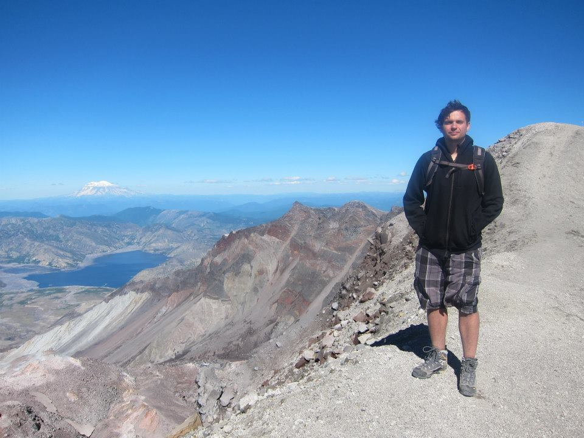

About Me
|  | I'm currently a NASA Postdoctoral Program Fellow in the
Department of Earth Sciences at the University of California at Riverside.
I received my PhD in 2016 at the University of Washington with dual titles in
astronomy and astrobiology. I completed my undergraduate
degrees in astronomy and physics at the
Florida Institute of Technology. I also spent two lovely summers researching and
observing comets as an undergraduate at Lowell Observatory in Flagstaff, AZ. |
| My research interests and activities include observations of Earth
as an exoplanet; climate, photochemical, and radiative transfer
modeling of terrestrial planet atmospheres; and generating synthetic
spectra of model exoplanets. I'm particularly interested in work that can inform our ability to characterize Earth-sized planets in the habitable zones of their host stars, especially in search of remotely-detectable biosignatures. You can find out more about my research on my research page. |
| When I was at UW, I liked being involved with various activities around campus. I served as a senator on various
committees in the Graduate and Professional Student Senate for five years, including as an Executive Senator. I was also a community events organizer for the Pre-Major in Astronomy Program, which aims to increase diversity in astronomy and the sciences. I enjoy public outreach and have taught K12 and undergraduate students about astronomy at UW's on-campus planetarium. |